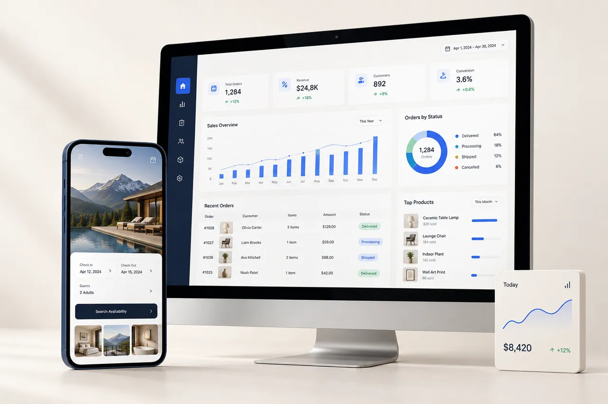
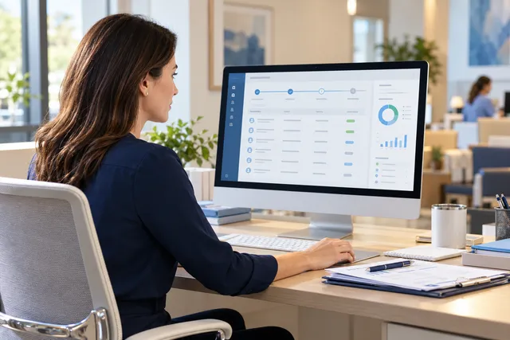

Business websites
A clear, responsive home for your business.
- Custom page layouts
- Mobile-first navigation
- Content and search foundations
UMAR ILYAS / WEB DEVELOPMENT & AI WORKFLOWS
I’m Umar Ilyas, a web developer and AI workflow builder based in Nowshera, Pakistan. I work remotely on responsive websites, business dashboard interfaces and practical automation prototypes. We start by agreeing on the problem, scope and a result you can test.

CHOOSE YOUR STARTING POINT
A clear, responsive home for your business.
Useful screens for the way your team works.

Explore the scope ↗Explore the idea before connecting live systems.
01 / BUSINESS WEBSITES
For a small business, a useful website explains the offer, answers common questions and gives visitors a clear next step. The scope can include a homepage, service pages, location information and contact options.
Explore Ember Café’s menu and sample order flow, Staywise’s hotel booking-request prototype and ClearHome’s service estimate demo. These fictional product studies demonstrate interaction design; they are not client testimonials or live booking services.
02 / DASHBOARDS & OPERATIONS
I can help turn a spreadsheet or manual process into a dashboard prototype with clear views, filters and task states. We use sample data first, then define any database, authentication and integration work needed for production.
Try PanelPilot’s provider-enrollment workspace and ParcelPilot’s orders and inventory demo. My experience in medical credentialing informs the attention to follow-ups and operational detail.
03 / AI & WORKFLOW PROTOTYPES
An automation project starts with a specific task, its inputs and the decision a person still needs to review. I build and explore early workflow concepts with clear sample data and explicit integration boundaries.
See the Restaurant AI ordering-assistant case study and Atlas Helpdesk guided-support prototype. Portfolio interactions use sample data; a simulated answer does not imply a live AI connection.
The handover scope can include source code, setup notes and guidance for updating content. Hosting, paid services, maintenance and live integrations are agreed explicitly.
Yes. I’m based in Pakistan and open to remote projects. We agree on communication, review checkpoints and timezone overlap before starting.
Your business or project, existing website if any, the users, the main problem, required pages or features, deadline and budget range. Please use sample data when describing a workflow.
The portfolio separates flagship project case studies from fictional product studies. The browser demos use sample data. Each project page explains its scope and limitations.
No. I can improve technical setup, content clarity and usability within the agreed scope. Search rankings depend on competition and search-engine decisions, and must be measured over time.
Share a short brief and a link to any existing website or workflow. We can decide on a useful first deliverable.
Connect on LinkedIn ↗ · Explore GitHub ↗ · Other contact options ↗
SEARCH VISIBILITY
Technical SEO, clear answer-focused content and consistent identity are part of a useful website. Explore the SEO / AEO / GEO scope and deliverables.
PROJECT ENQUIRY
Prepare a brief, then send it using your email app. Nothing is submitted until you send the email.